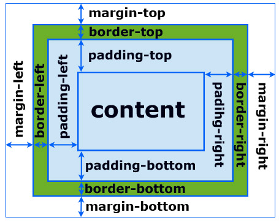

Практическая работа "Свойства блоков с обрамлениями. Отступы, поля, размеры"
Блочная модель
На веб-странице любому HTML элементы соотвествует определённая прямоугольная область (блок). Во время рендеринга браузер определяет размер и положение этих блоков, а также опрделяет их CSS свойства, что бы применить их и отобразить на экране
В CSS создана специальная блочная (англ. box model), которая описывает, из чего состоит любой блок и от каких свойств зависят его размеры. В этой модели каждый блок состоит из четырёх областей: margin (внешние отступы), border (границы элемента), padding (внутренние отступы), content (содержимое).
